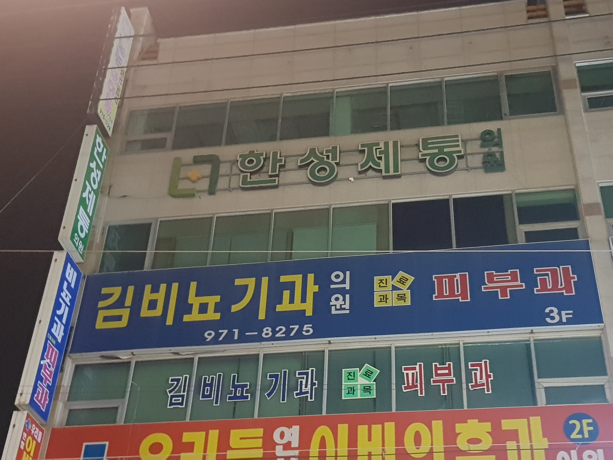
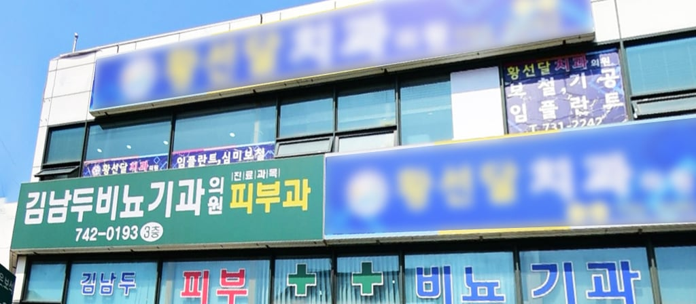
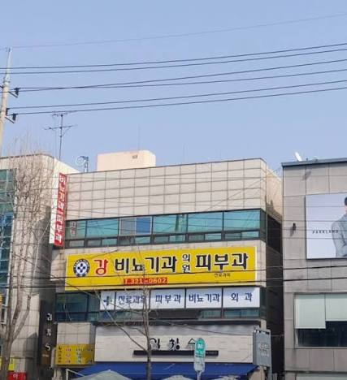

비뇨기과 붙은곳 가면 일반 진료 거진 본다



비뇨기과 붙은곳 가면 일반 진료 거진 본다
궁금한게 왜 비뇨기과랑 피부과 겸하는 경우가 많은거임?
다른 과는 안그러잖아
윗댓글들에 설명잘해놓음
오 감사감사
요즘 일반진료하는 피부과는 갈때마다 사람 겁나많더라 미용하는 병원들이 워낙 많으니 그거 피해서 진짜 피부과를 사람들이 찾아서 몰리는건데,, 이렇게 일반진료 피부과에 사람들이 몰려도 미용전문의원보다 돈을 못버나? 현직에 있는 사람있으면 의견좀 무러보고 싶네
쓰는 돈 차이가 커서 그런거 아녀?
미용 피부과는 보험처리도 안되서 비써더라도 그 비용 잘 내고 시술 받잖아
일반진료하면 삭감이 ㅈㄴ 심함. 만성질환자 피부진료하면 100% 이유없이 삭감이고 초진환자도 30퍼는 삭감당하는걸로앎
옛날에는 피부진료 삭감이 그렇게 심하지 않아서 피부진료 미용 반반이었는데 지금은 건보재정 아낀다고 피부 관련 질환들 줄삭감 때려서 하려는사람이 없음. 그나마 하는곳도 미용 덕분에 경영이 되는수준임
역시 보이지 않는 이유들이 있었구나.. 미용시장을 개방하는 걸 추진하기 앞서서, 피부진료 삭감이 정책적으로 보완이 되는 게 우선되어야겠네.
옛날할배들은 그럼 자동으로 더블보드임?
과거에 비뇨기과하고 피부과가 같이 붙어있는 과였던 시절에 개업하면 저렇지 않나?